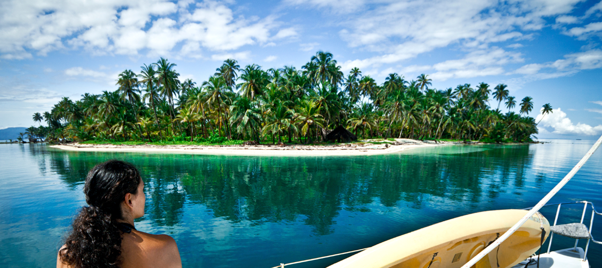
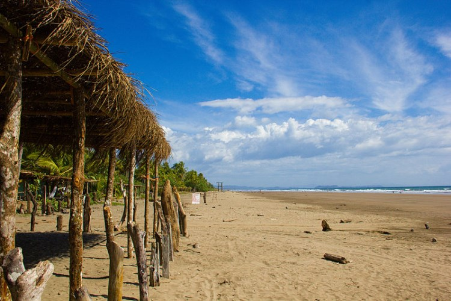
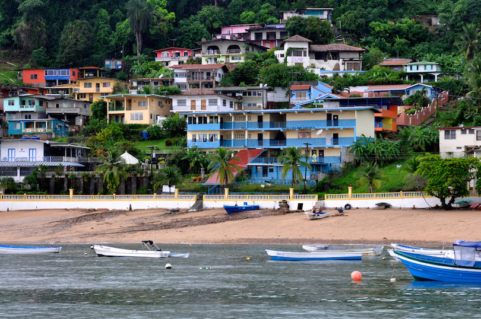
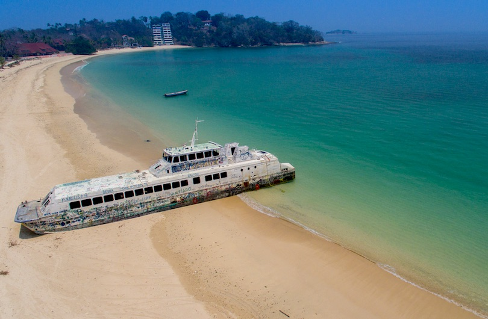
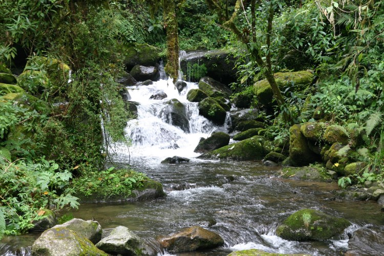
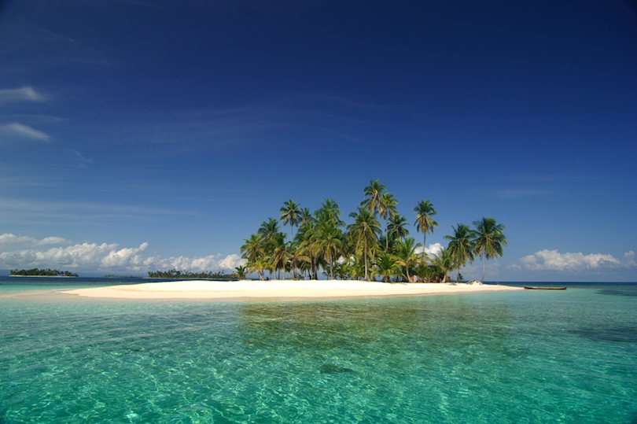
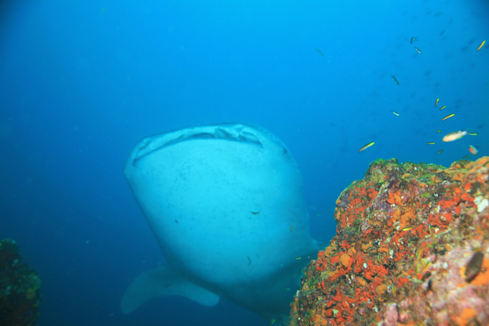
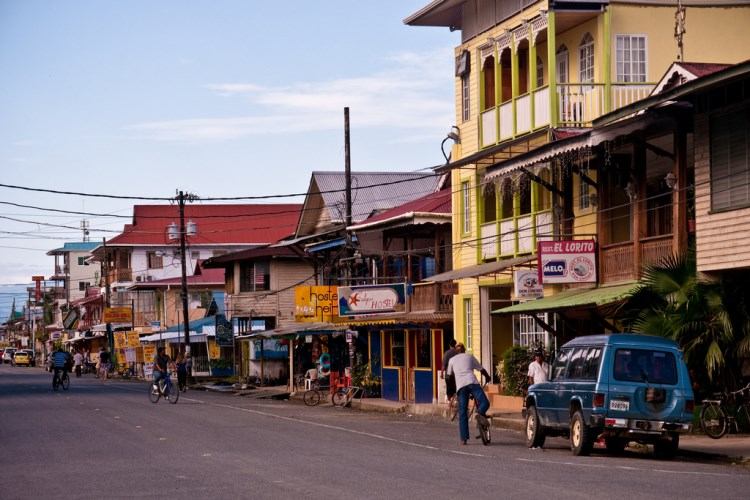
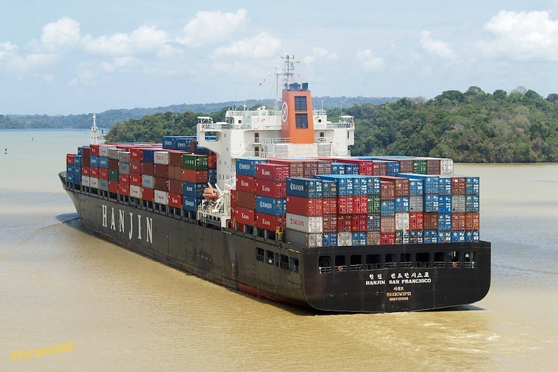

The Caribbean coastline has many good natural harbors. However, Cristobal, at the Caribbean terminus of the canal, had the only important port facilities in the late 1980s. The many islands of the Archipielago de Bocas del Toro, near the beaches of Costa Rica, made an extensive natural roadstead and shield for the port of Almirante. The over 350 San Blas Islands, near Colombia, are spread out for more than 160 km along the sheltered Caribbean coastline.

Isla Taboga
Located about 20 kilometers from Panama City, Isla Taboga is Panama’s favorite escape out of the city to bathe in its sandy beaches, ride Jet Ski’s, speed boats and fishing charters. First settled by the Spanish in 1515, Isla Taboga has a charming village with the second-oldest church in the western hemisphere, a few narrow streets with a few restaurants and great views to Panama City from the top of the Island.

Pearl Islands
Indigenous peoples populated the Pearl Islands until Spanish Conquistadors discovered the archipelagos’ wealth of pearls in the 1500s. The islands gained new popularity after being featured on the reality television show Survivor. The islands feature lush forests surrounded by white sandy beaches. Contadora Island is the most developed of the Pearl Islands, with several resorts and an airstrip. Visitors can charter private yachts to cruise and explore the islands.

Sendero Los Quetzales
Sendero Los Quetzales near the small town of Cerro Punto is one of Panama’s most beautiful trails. The 9 km (5 miles) route starts east of town and takes between four and seven hours. The trail winds through the cloud forest of Parque Nacional Volcán Barú and follows the Río Caldera, crossing it several times en route. It ends in the mountains above Boquete. The trail can also be hiked in reverse, but it’s entirely uphill from Boquete. Because the trail is not well marked it is recommend to hire a guide or join an organized tour.

San Blas Islands
Located in Eastern Panama, the San Blas Islands is the best place to explore the rich culture of Panama’s indigenous people, the Kuna. The Kuna people view this area as their own but are warm and welcoming to visitors. One member of the tribe is stationed on many of the area’s tiny tropical islands, and for a nominal fee, they allow visitors exclusive use of the island for the day.

Coiba
The waters of Panama are unmatched in their level of marine diversity, and nowhere is this more evident than in the Coiba National Marine Park. The island of Coiba is the largest island in the park, as well as the largest island in all of Central America. More than 800 species of marine life are present in the area. The park is known as one of the best places to enjoy snorkeling and scuba diving on the Pacific Coast.

Bocas Town
The capital of the Bocas del Toro Province, Bocas del Toro is a favorite spot for scuba divers, and as the dives are shallow, it’s particularly suited for particularly for beginners. An extensive coral reef features colorful varieties of tropical fish. Discovered by Christopher Columbus in 1502, the area remains one of the most popular tourist attractions in Panama. In Bocas del Toro, visitors routinely hike through the lush rainforest to enjoy empty stretches of beautiful shoreline.

Panama Canal
The Panama Canal stands as one of the world’s greatest feats of engineering. Visitors can take either a partial or complete crossing of the canal. Crossings take four to eight hours. Many visitors choose to explore the canal by visiting the Miraflores Locks Museum. From the restaurant located at the top floor of the museum, visitors can watch transiting vessels in the canal below.
